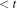
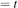

2 How regularization works conceptually
Terence Parr
(Terence teaches in University of San Francisco's MS in Data Science program. You might know Terence as the creator of the ANTLR parser generator.)
At this point, we've set the stage: Regularization is important for model generalization and the idea behind regularization is simply to constrain coefficients, at a small cost in overall accuracy. Now, let's figure out how regularization constrains coefficients, at least conceptually. (In a later section, we'll look at how regularization actually works in practice.)
2.1 Single-variable regularization
If the loss function minimum were on the other side of the vertical axis at, say,  then the best regularized coefficient would be
then the best regularized coefficient would be  . We call this constraint of coefficients a hard constraint because the coefficients are strictly limited. (Foreshadowing, we actually implement these with soft constraints that just make bigger coefficients more and more expensive.) Mathematically, this hard constraint in one dimension is
. We call this constraint of coefficients a hard constraint because the coefficients are strictly limited. (Foreshadowing, we actually implement these with soft constraints that just make bigger coefficients more and more expensive.) Mathematically, this hard constraint in one dimension is  , but we could also use
, but we could also use  where t represents the largest coefficient we want to allow (
where t represents the largest coefficient we want to allow ( in this case). We use “less than” rather than “equal to” to cover the case where the minimum loss function location is within the constraint region. In practice, we use a grid search to find the t that gives the lowest validation error.
in this case). We use “less than” rather than “equal to” to cover the case where the minimum loss function location is within the constraint region. In practice, we use a grid search to find the t that gives the lowest validation error.
Now, let's consider the case where we have two coefficients to regularize instead of one (e.g., there are two variables in our explanatory matrix and we are not optimizing the y-intercept,  ). Moving from one to two coefficients means the constraint line becomes a constraint region, and there are two common choices for the shape of this region. The first is a circle, which is used for Ridge, and the second is a diamond shape, which is used for Lasso. Ridge has some simpler properties, so let's take a look at it first.
). Moving from one to two coefficients means the constraint line becomes a constraint region, and there are two common choices for the shape of this region. The first is a circle, which is used for Ridge, and the second is a diamond shape, which is used for Lasso. Ridge has some simpler properties, so let's take a look at it first.
2.2 L2 Ridge regularization
Ridge = L2 regularization = weight decay
Another way to say “vector length” is “vector norm” or “Euclidean distance between two points.” It turns out there are lots of norms and mathematicians classify them as

(which we'll see shortly),

, ...,

. The Euclidean distance / vector length is called the
norm and that is why we call Ridge “
regularization.” The boundary is always at
t units away from the origin, sweeping out a circle. (See
L1 vs L2 norm for an easy to read discussion.)
While we're talking about names, L2 regression was called “Ridge” in the original paper from 1970 because the author remarked that surface plots of quadratic functions often look like ridges.
Also, L2 regularization (penalizing loss functions with sum of squares) is called weight decay in deep learning neural networks.
To get a feel for L2 regularization, look at the hypothetical loss functions in Figure 2.3, where I have projected the 3D loss “bowl” function onto the plane so we're looking at it from above. The big black dot indicates the ( ) coordinate where the loss of function is minimum (bottom of the bowl). The big red dot is the () point on the boundary closest to the optimal loss function location subject to the circular L2 constraint.
) coordinate where the loss of function is minimum (bottom of the bowl). The big red dot is the () point on the boundary closest to the optimal loss function location subject to the circular L2 constraint.
Figure 2.3. blort
All of these loss functions are symmetric, like your morning cereal bowl, which makes it easy to identify where the regularized () sits on the boundary circle. For symmetric loss functions, draw a line from the origin to the minimum loss function location, indicated by the dashed line in Figure 2.3. The optimal regularized () coefficients are at the intersection of that line and the boundary.
Although I don't show it here, if the minimum loss function location sits within the boundary region, then the regularized location is exactly the same as the minimum loss location. (That's why we use  rather than .) Another special case is when the minimum loss location sits on one of the axes, as in Figure 2.3 (b). In this case, one of the regularized coefficients will also sit on the axis and, hence, one of the coefficients will be zero. We will talk a lot about zero coefficients later when comparing Ridge and Lasso.
In general, the loss functions will not be symmetric and look more like those depicted in Figure 2.4. Identifying the regularized coefficients on the boundary circle is not as simple as drawing a line between the origin and the minimum loss location, such as in Figure 2.4 (a). (I'm sure in a non-Euclidean space, such as one warped by gravity, we could draw a “straight” line; is there an algebraic topologist in the house?) Now, the approach is to identify the location of minimum loss that sits directly on the boundary circle. That is exactly how I plotted the location of the red dots in these figures. I computed the loss function value at many points along the circle and simply identified the location where the loss function was the smallest. This is really important and so let's make a big deal out of it:
Finding the L2 coefficients location: The L2 regularized coefficients sit on the L2 boundary circle where the loss function has the minimum value. So, just walk around the circle and identify the location with the minimum loss function value. (Unless the minimum loss location is inside the circle, in which case the regularized coefficient location is the same as the minimum loss location.)
I see instructors and articles recommend students look for where a loss function contour line touches the boundary region, but this can get you in trouble. The contour maps are a 2D projection of a smooth 3D surface and so the number and location contour lines are kind of arbitrary. For example, I chose the number of contour lines in these plots, but I could've chosen one third as many. With few contour lines, it would be challenging to find a contour line that intersected the boundary circle. Except for Figure 2.4 (a), the regularized coefficient location does not sit where a contour line meets the constraints circle. It's better to stick with finding the minimum loss location on the boundary circle and try not to get clever with visual rules, at least until you have more experience.
Figure 2.4. blort
Let's look at the mathematics now. Regularizing our MSE loss function is a simple matter of adding a “subject to” constraint to the definition, in this case, L2 norm  :
:
Everything to the left of “subject to” is identical to the unregularized two-variable linear-model (MSE) loss function:  . All we've done is to constrain how close () coefficients can get to the loss function minimum location. Note that we do not constrain the y-intercept (see page 64 in “The elements of statistical learning”). We are only concerned with constraining slope angles, not where the line touches the y-axis. We find the value of t using a brute force search that minimizes the validation error.
. All we've done is to constrain how close () coefficients can get to the loss function minimum location. Note that we do not constrain the y-intercept (see page 64 in “The elements of statistical learning”). We are only concerned with constraining slope angles, not where the line touches the y-axis. We find the value of t using a brute force search that minimizes the validation error.
That's all there is to the concept of regularization: adding a hard constraint to the loss function equation. Congratulations, if you've gotten this far and understood everything! If all you care about is L2 Ridge regularization, the only thing left to consider is how we actually implement regularization, which we'll do in [impl].
Now, let's take a look at the other common form of regularization.
2.3 L1 Lasso regularization
If we use a diamond shape rather than a circle around the origin as the boundary region, we get Lasso regularization, which we will call L1 regularization because it constrains  coefficients using the L1 norm. The L1 norm gives us a diamond shape, obtained by constraining the sum of coefficient magnitudes to some constant, t. (L2 Ridge constrains the sum of the square of coefficient magnitudes.) Lasso stands for “Least Absolute Shrinkage and Selection Operator,” according to the original paper. Why we would choose a diamond over a circle will become clear shortly.
coefficients using the L1 norm. The L1 norm gives us a diamond shape, obtained by constraining the sum of coefficient magnitudes to some constant, t. (L2 Ridge constrains the sum of the square of coefficient magnitudes.) Lasso stands for “Least Absolute Shrinkage and Selection Operator,” according to the original paper. Why we would choose a diamond over a circle will become clear shortly.
The plots in Figure 2.5 show the L1 diamond constraint regions in the special case where the loss function is symmetric. The regularized () coefficient location on the diamond occurs where a perpendicular line emanates from the diamond to the minimum loss location. The dotted lines in Figure 2.5 show these perpendicular lines. Contrast this with L2 regularization, which draws a line from the origin to the minimum loss location for symmetric loss functions.
Figure 2.5. boundary distance from origin is some of coefficient magnitudes less than some constant, t.
In Figure 2.6, you'll see the general case where the loss functions are asymmetric. One of the key takeaways from these examples is that three out of four loss functions have a zero coefficient (the red dot is on an axis at a diamond peak). This is despite the fact that the minimum loss function locations look to be nowhere near an axis, which brings us to the difference between L1 and L2 in a nutshell: L1 tends to give a lot more zero coefficients than L2.
Figure 2.6. blort
To find regularized coefficients, we follow the same rule we did for L2, except using a different boundary shape:
Finding the L1 coefficients location: The L1 regularized coefficients sit on the L1 boundary diamond where the loss function has the minimum value. So, just walk around the diamond and identify the location with the minimum loss function value. (Unless the minimum loss location is inside the diamond, in which case the regularized coefficient location is the same as the minimum loss location.)
Just as we did for L2, regularizing the loss function means adding a “subject to” constraint. The only difference is that we are summing the coefficient magnitudes (absolute values) rather than the squared coefficient values:
As before, we don't care what the value of t is per se; we find the t through brute force that gives the lowest validation error.
If you've made it this far, you now understand exactly how L1 Lasso and L2 Ridge regularization work conceptually. The next step is to compare the two in detail and then we'll be ready to describe the actual implementation of regularization (versus the conceptual mechanism we've seen so far).
The Ridge and Lasso terms seem backwards
In case you haven't noticed, the Ridge and Lasso terms seem kind of backwards. The circular boundary of Ridge looks more like a lasso and the constraint region for Lasso, with lots of pointy discontinuities, looks like a bunch of ridges. Ha! For more good-natured teasing of statisticians, see
Statisticians say the darndest things.

 for some
for some  coefficient. (In terms of high school x and y, this is just
coefficient. (In terms of high school x and y, this is just  or “a bowl shifted to 2”.) The minimum loss is the bottom of the curve at
or “a bowl shifted to 2”.) The minimum loss is the bottom of the curve at  . But, imagine we know that any coefficient bigger than 1.0 (or -1.0) will reduce generality. The best regularized coefficient is, therefore,
. But, imagine we know that any coefficient bigger than 1.0 (or -1.0) will reduce generality. The best regularized coefficient is, therefore,  , which is on the constraint boundary in the direction of the minimum. By “best,” we mean the closest we can get a coefficient to the loss function minimum location without exceeding our constraint.
, which is on the constraint boundary in the direction of the minimum. By “best,” we mean the closest we can get a coefficient to the loss function minimum location without exceeding our constraint. 
 ,
,  . Surrounding the origin (0,0) there is a circular hard constraint that would prevent coefficients from reaching the minimum loss function location. The best we could do would be coefficients on the constraint circle in the direction of the loss function minimum. Constraining two coefficients to a circle of radius
. Surrounding the origin (0,0) there is a circular hard constraint that would prevent coefficients from reaching the minimum loss function location. The best we could do would be coefficients on the constraint circle in the direction of the loss function minimum. Constraining two coefficients to a circle of radius  . Or, we could get rid of the square root and pick some other constant,
. Or, we could get rid of the square root and pick some other constant,